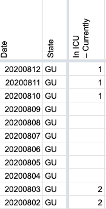
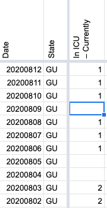

[GU] Backfill current icu values 8/6-8/8
Issue number 747
hmhoffman opened this issue on August 10, 2020 at 12:59 pm
State: GU Dates impacted: 8/6-8/8 Issue described: On 8/10, we discovered a new source for current icu figures. GU has began posting daily “Guam COVID-19 Case Update”, which include current icu numbers. We should patch current icu for 8/6, 8/7, and 8/8 using the case updates from that day. Sources: https://www.facebook.com/GHSOCD/?tn-str=k*F
stale[bot] added the label stale on August 25, 2020 at 1:29 pm
stale[bot] commented on September 4, 2020 at 2:27 pm
This issue has been closed because it was stale for 15 days, and there was no further activity on it for 10 days. You can feel free to re-open it if the issue is important, and label it as “not stale.”
stale[bot] closed the issue on September 4, 2020 at 2:28 pm
MattHilliard reopened this on September 4, 2020 at 2:50 pm
stale[bot] removed the label stale on September 4, 2020 at 2:50 pm
stale[bot] removed the label stale on September 4, 2020 at 2:50 pm
MattHilliard commented on September 4, 2020 at 2:55 pm
Before: 
After: 
MattHilliard closed the issue on September 4, 2020 at 2:55 pm
This issue has been automatically marked as stale because it has not had recent activity. It will be closed if no further activity occurs. Thank you for your contributions!